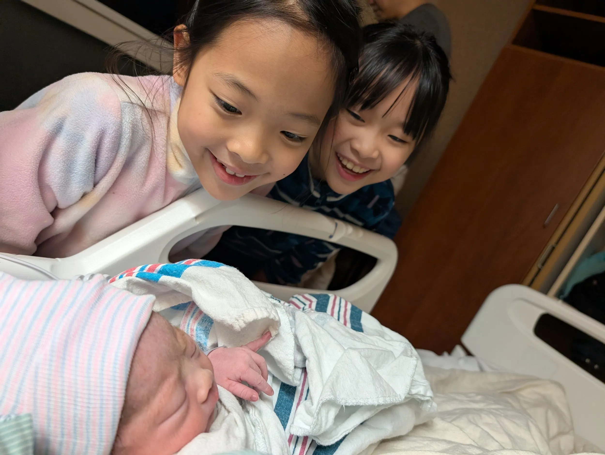
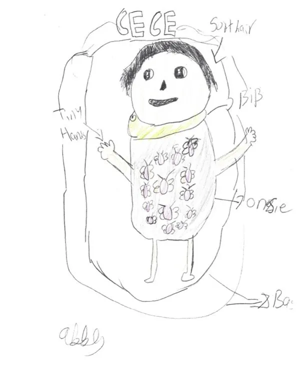
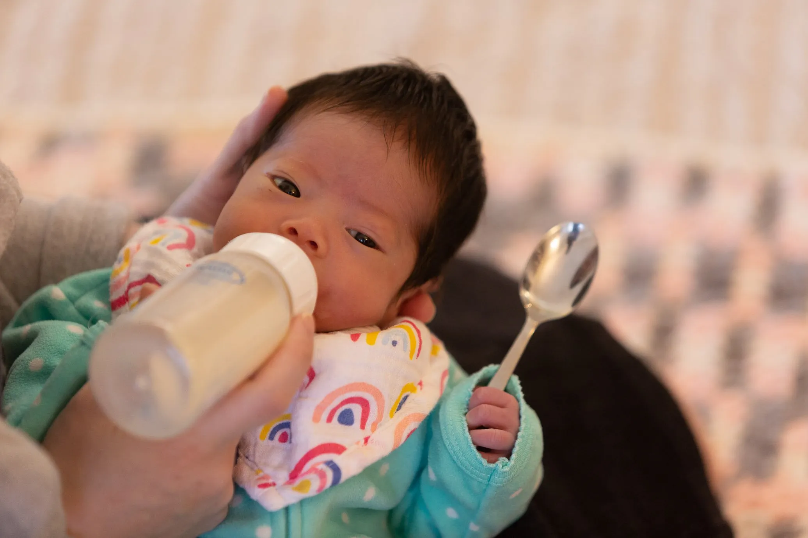
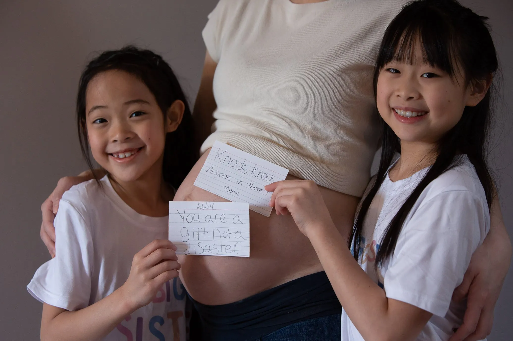

Cece's Story
Cece was our sweetest, cuddliest, squishiest baby — so beautiful, chunky, and precocious. We wanted to write a series of post to share her story and celebrate her life.
-

One snowy night, the birth of Ce...
[By Evelyn]
It took us a few years to want another child. As people imagine, raising kids is not an easy feat. And after having two spirited daughters, YihChun and I debated for many years whether we could handle more. -

Reflections from the kids
[By Yih-Chun]
We offered our older children a chance to write their memories of Cece on this website, and they both wanted to share some words. -

Glorious food!
[By Yih-Chun]
Cece has had an interesting relationship with food since she was born. When she was very small, her tongue often curled up, leaving the nipple or bottle on the wrong side. I often had to wait until she started crying with her mouth open in order to get the bottle in. -
Grief is a funny thing
[By Evelyn]
出事後才發現我身邊有多少人也是失去過孩子. 我很感謝她們作為過來人在共同的痛苦中分享了經驗. 有位朋友形容哀悼很奇怪, 有時候真的感覺好像沒事了, 一切都過了, 甚至笑得很開心, 但下一陣就可以被悲哀(甚至憤怒)充滿.
After the accident I was reminded of how many of my friends have had losses as well. I am so thankful for these women coming together to share their wisdom in our shared grief. -

What Ce’s sisters wanted to tell her (while she was still in my belly)
[By Evelyn]
Humor heals, and kids say the funniest things. I wanted to include some of the lighter memories of Ce with her sisters. When I was almost due, I asked for the girls to write down what they wanted to say to Ce. -
Eulogy
[By Yih-Chun, translation/中文翻譯 by Evelyn]
This letter to Cece was our eulogy at her Celebration of Life service.
這封信是我們為 Cece 寫的. 作為她安息禮拜的追悼文.